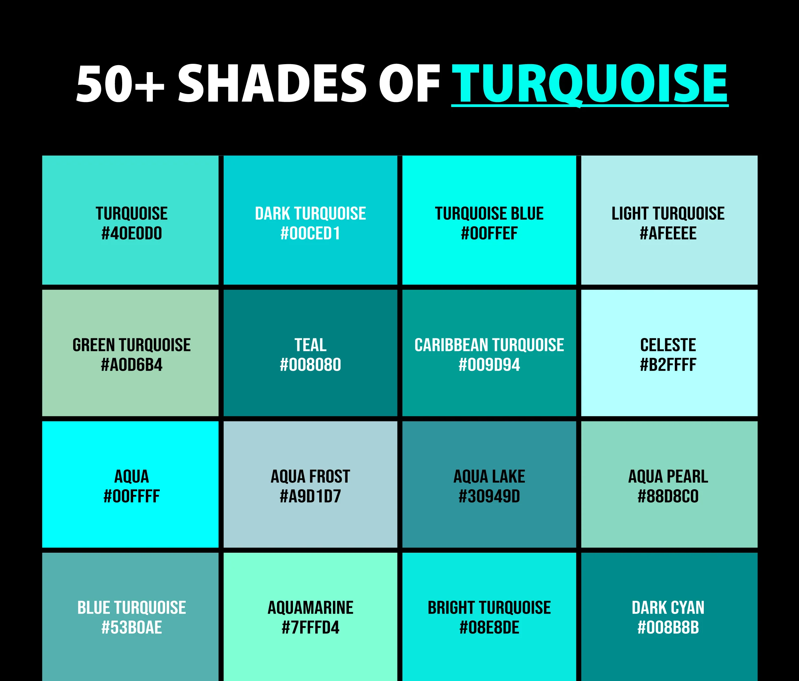
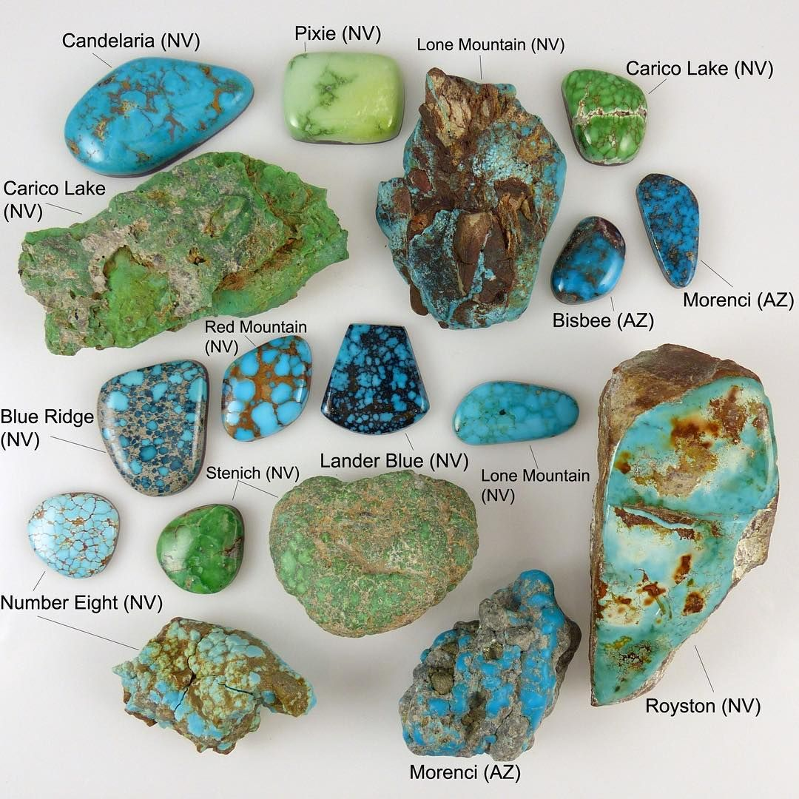
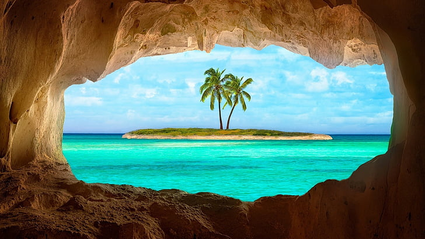
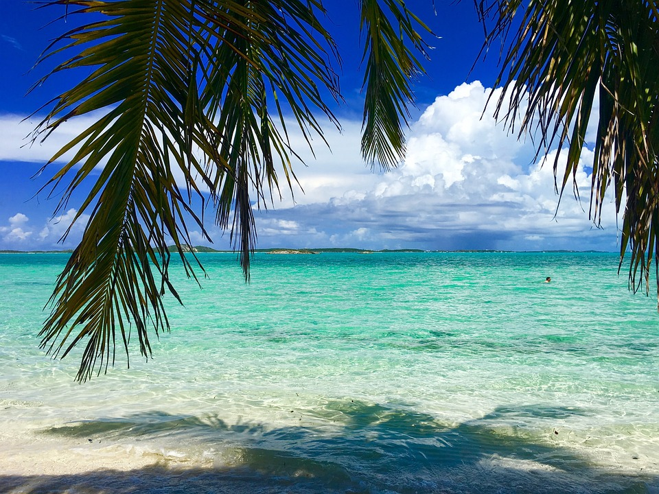

Step into the world of "Turquoise Treasures," where the captivating hue of turquoise comes alive through various stunning places and intriguing objects. This vibrant color, reminiscent of tranquil seas and clear skies, evokes a sense of peace and creativity. In this gallery, we celebrate the beauty of turquoise as it manifests in breathtaking natural wonders, from shimmering ocean coastlines to majestic stone formations, as well as in artisanal crafts that showcase cultural heritage and artistry. Each entry invites you to appreciate the depth and richness of turquoise, inspiring a renewed appreciation for this enchanting color that connects us all to the beauty of the world around us.
Here are some of my favorite photos that showcase the color turquoise:

